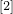
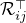

Patch-dictionary method for whole image recovery
Background
Various algorithms have been proposed for dictionary learning such as KSVD and the online dictionary learning method. Among those for image processing, many use image patches to form dictionaries; see for example, which uses patch-dictionary for image denoising.
We propose a new dictionary learning method by the accelerated alternating proximal gradient. We address a simple yet open issue regarding whole-image recovery: the large number of overlapping patches lead to a large number of free coefficients in the recovery, which can cause overfitting and slow computation. This issue has limited many patch-based methods to the “local” or “nearly local” kinds of image processing tasks, such as denoising, inpainting, deblurring, super-resolution, and compressive sensing in which the measurements encode the image patch by patch. For these tasks, one or a few patches can be processed or updated at a time, so the overfitting issue does not arise. We consider the more difficult “global” kind of task, such as compressive sensing and medical image recovery, where each of the measurements encodes the whole image and thus it is either impossible or very ineffective to process one or a few patches at a time.
Notation and our method
We shall recover an image from its corrupted measurement , where denotes a linear operator, and is some noise. Depending on the applications, can take different forms.
Let denote the -th patch ( is a linear operator) and assume its has an (approximately) sparse representation under a given dictionary  , i.e., where is an (approximately) sparse vector. When a set
, i.e., where is an (approximately) sparse vector. When a set  of patches together covers every pixel of , we can represent by
of patches together covers every pixel of , we can represent by
where  is the adjoint of , and is an operator that averages the overlapping patches.
Now, we take as a set of covering but non-overlapping patches. Then , the identify operator. Constructing such a is equivalent to partitioning into non-overlapping blocks, such as the following two partitions.
Two examples of non-overlapping patches that cover a whole image
To recover from , we solve the following model
where is a weight vector. The model () can be solved by many convex optimization methods, for example, YALL1 in our numerical experiements.
When a set of non-overlapping patches is used in (), the solution sometimes bears the grid artifact. An effective strategy to avoid this artifact is to solve multiple instances of () with 's that arrange their patches in different ways, like the two examples above though we use up to five different arrangements, and then take the average of the solutions. Of course, the different instants of () can be solved in parallel.
It is important to use non-overlapping patches since this limits the number of free variables in () and improves solution quality (despite the possible grid artifact). If all the overlapping patches are used, there will be far more free variables.
Selected numerical results
LEFT: image denoising results by solving () with all the overlapping patches (PSNR = 26.98); RIGHT: the same with just one set of non-overlapping patches (PSNR = 30.57)
We solve five instances of () with
's that arrange their patches in different ways. Out of the five recovered images , the one with the highest PSNR is denoted by . We also compute , which is the running average of the first recovered images. The table below reports their PSNRs. Image PSNRs improve as more average is taken.
The quality of dictionary plays a vital role in image recovery. We tested recovering images from their compressive circulant measurements and report their PSNRs below. The four columns in each group, from left to right, correspond to: the solution to () with the learned dictionary
, that with the discrete cosine transform (DCT) , that with the adaptively updated dictionary (see Sec. 2.2 of our report or ), the solution to a total variation model. The winner is the adpatively updated dictionary.
More numerical results, as well as the technical details, can be found in our report.
Matlab codes
Citation
Y. Xu and W. Yin. A fast patch-dictionary method for whole-image recovery. Inverse Problems and Imaging, 10(2), 563–583, 2016.
References
. M. Aharon, M. Elad, and A. Bruckstein. KSVD: an algorithm for designing overcomplete dictionaries for sparse representation, IEEE Transactions on Signal Processing, 54(2006), pp. 4311–4322.
. J. Mairal, F. Bach, J. Ponce, and G. Sapiro. Online dictionary learning for sparse coding, in Proceedings of the 26th Annual Iternational Conference on Machine Learning, ACM, 2009, pp. 689–696.
. M. Elad, and M. Aharon. Image denoising via sparse and redundant representations over learned dictionaries, IEEE Transactions on Image Processing, 15(2006), pp. 3736–3745.